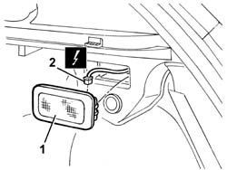
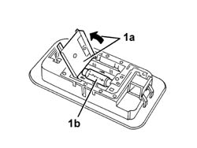

7040G30 boot light bulb holder - r r
- Path
- Procedures > 70 FITTINGS > 7040 BODYSHELL INTERIOR TRIMS AND FITTINGS > 7040G vehicle compartment lightening system > 7040G30 boot light bulb holder - r r
- Kind
- repair procedure (removal / refitting; the operation number is the code)
- Applies to
- all engines; all production periods
- Interactive page
- https://sloeber94.github.io/elrnDB-a147/en/#/3025820
Applies to: all engines; all production periods
 Removing
Removing
 Refitting
RefittingOpen the boot and remove the parcel shelf.
1. Remove the bulb holder from the retainers.
2. Disconnect the electrical connections.
 | Name | Connector |
|---|---|---|
2 | Boot courtesy light |

Applies to: all engines; all production periods
1. If necessary, open the flap (1a) and remove the bulb (1b), prising it from the retainers.

Applies to: all engines; all production periods
Refitting
RemovingCheck that the bulb holder is undamaged.
If removed, refit the bult and close the cover.
Connect the electrical connection.
Fit the bulb holder.
Refit the parcel shelf and close the boot lid.
Topics linked from this page (1)
Topics that link to this page (13)
- I50 INTERIOR LIGHTS NOT WORKING / UNDER NO CIRCUMSTANCES
- 5505C28 intergrated engine bay and abs system wiring - r r
- 5505C41 cabin wiring - r r
- 5580C50 (HEAD- BAG MODULE ) (one), left or right - R.R.
- 7030B12 sliding roof (assembly) - r+r
- 7030B40 drainage channel - r r
- 7030B50 sun roof guide , one , lh or rh - r r
- 7035C52 (One), side WINDOW left or right - R.R.
- 7035C54 side window one lh or rh r r includes cleaning of housing
- 7040H10 roof panel lining - r r
- 7040H16 roof panel lining - r r
- 7040H42 rear pillar trim - r r
- 7065B10 l/h or r/h rear safety belt (one) - r+r